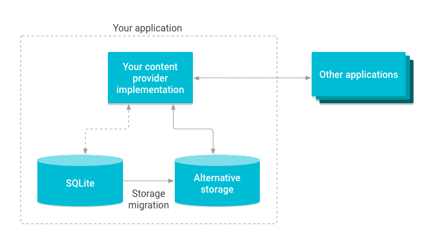
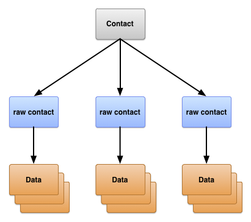

Android App Development
Towson University
Randy Valis
Fall 2024
Agenda
- Review (Permissions/Location)
- Quiz
- BroadcastReceivers
- ContentProviders
Quiz
What are Intents used for in an Android app?
a. To pass data between applications
b. To start another application
c. To start another Activity
d. All of the above
What are Services used for in an Android app?
a. To run code without a user interface
b. To run code in a background thread
c. To make network API calls
d. All of the above
When making network requests, care must be taken to…
a. Write the fewest lines of code as possible
b. Make network requests on a background thread
c. Make network requests on the main thread
d. All of the above
BroadcastReceivers
- Pub-Sub from the System and other Apps
- Subscribe to system events
- Broadcast events from within your app
System Events
- Boot finished
- Wifi on
- Package install
- A listed in SDK/platforms/android-*/data/broadcast-actions.txt
Manifest Registered
<receiver android:name=".MyBroadcastReceiver" android:exported="true">
<intent-filter>
<action android:name="android.intent.action.BOOT_COMPLETED"/>
<action android:name="android.intent.action.INPUT_METHOD_CHANGED" />
</intent-filter>
</receiver>
Extend
- Extend BroadcastReceiver and override onReceive(Intent)
class Receiver : BroadcastReceiver() {
override fun onReceive(context: Context?, intent: Intent?) {
Toast.makeText(context!!, intent?.getAction().toString(),
Toast.LENGTH_SHORT).show()
}
}
Context-Registered
- Create a receiver in code.
- Register it with a context
- Receiver is valid as long as the context is alive
val br: BroadcastReceiver = MyBroadcastReceiver()
// do this in onResume or onStart
val filter = IntentFilter(ConnectivityManager.CONNECTIVITY_ACTION)
intentFilter.addAction(Intent.ACTION_AIRPLANE_MODE_CHANGED)
this.registerReceiver(br, filter)
// do this in onStop or onPause
this.unregisterReceiver(br)
If targeting devices newer than Android 8, BroadcastReceivers must be registered in code.
Communication
- How can your UI ‘know’ about an even that is received by a BroadcastReceiver?
EventBus
- Simple Pub/Sub (publish/subscribe) library
implementation 'org.greenrobot:eventbus:3.2.0'
- BroadcastReceiver can publish an event when it receives one from the system.
- UI components (MainActivity) can subscribe to events and update the UI.
Content Providers
- Motivation:
- Share Tasks with other apps
- Demo
Highlevel Overview
Why do we need them?
- Content Providers are used when your app needs to share data with other components/apps.
- Encapsulate your data
- Provides data security


What are they used for?
- Share access to your data with other apps
- Send data to a widget
- Return custom search suggestions for your app
- Synchronize your data with a server (SyncAdapter)
- Load data in your UI (CursorLoader)
How are they used?
- Send queries to the ContentResolver
- Get back a Cursor
- ‘Publish’ a Content Uri (sort like a url)
content://todos_app/todos
Querying existing ContentProviders
Contacts
https://developer.android.com/guide/topics/providers/contacts-provider.html
- Ask permission
- Build a query
- Read from the Cursor

Permissions
- Make sure you declare permissions.
<uses-permission android:name="android.permission.READ_CONTACTS">
Query
// Sets the columns to retrieve for the user profile
mProjection = arrayOf(
Contacts._ID,
Contacts.DISPLAY_NAME_PRIMARY,
Contacts.LOOKUP_KEY,
Contacts.PHOTO_THUMBNAIL_URI
)
// Retrieves the profile from the Contacts Provider
mProfileCursor =
getContentResolver().query(
Contacts.CONTENT_URI,
mProjection,
null,
null,
null)
Reading
- Same as reading a cursor from a database query.
Cursor cursor = ...
while(cursor.moveToNext()) {
cursor.getString(...)
}